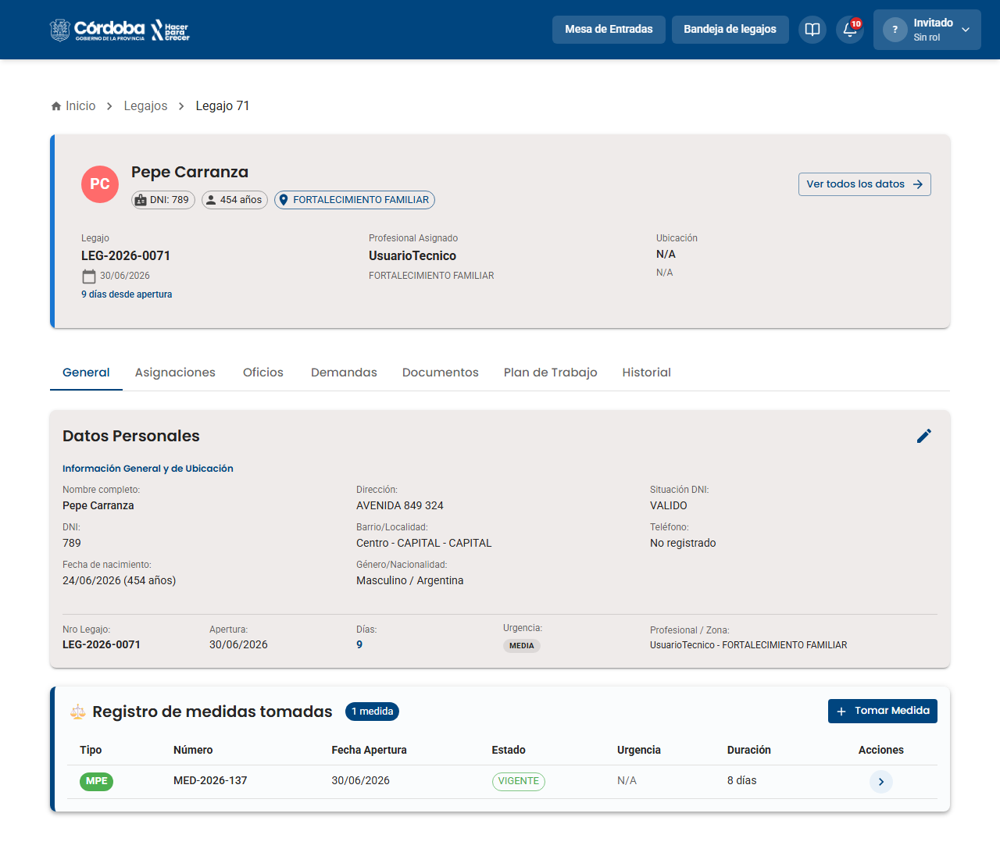
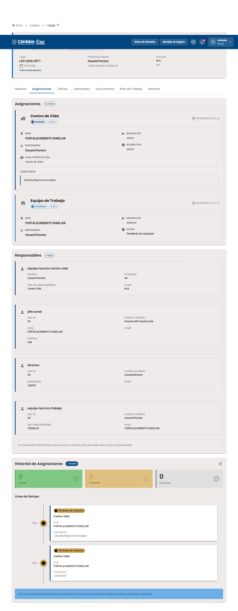
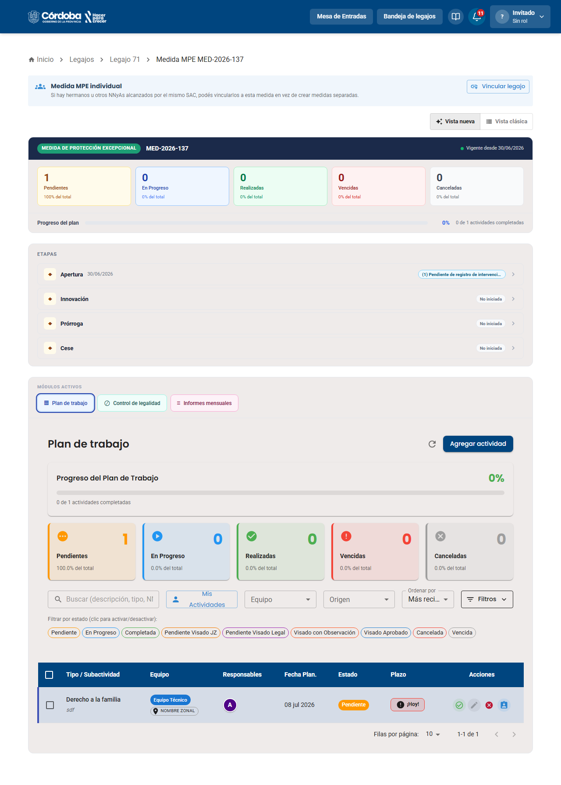
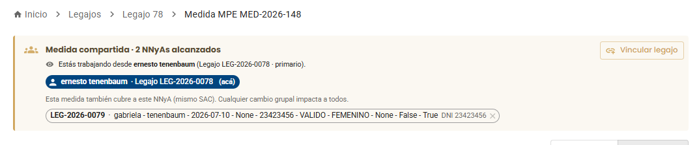
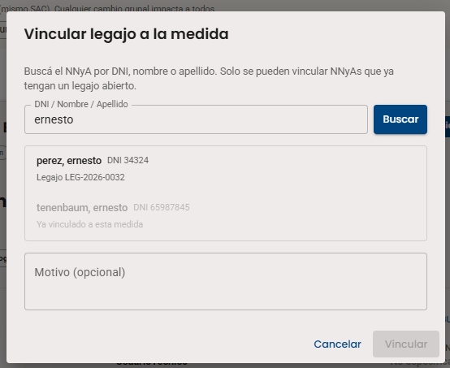

Etapa 7 de 10
📊 Detalle de Legajo y de Medida
El legajo es la carpeta única de cada NNyA. La medida es el proceso legal (MPE, MPI, etc.) que se abre dentro de uno o más legajos — por eso conviene conocer las dos pantallas juntas.
Parte 1 El Legajo
La ficha completa del NNyA: datos personales, equipo asignado, demandas de origen y medidas tomadas.
Paso 1 de 2
El Legajo

1
El encabezado y la pestaña General
Al abrir un legajo (por ejemplo LEG-2026-0071) aparece un encabezado fijo con el avatar, nombre, DNI, edad y zona del NNyA, y el botón "Ver todos los datos". Debajo, la pestaña General muestra los Datos Personales completos y el bloque "Registro de medidas tomadas": una tabla con Tipo (MPE/MPI), Número, Fecha de Apertura, Estado y Duración. El botón "+ Tomar Medida" permite abrir una nueva medida sobre ese mismo legajo.
📸 Captura: 0018-legajo-detalle-vista-general.png

2
Las demás pestañas del legajo
Asignaciones muestra el equipo a cargo (Centro de Vida, Equipo de Trabajo) con sus responsables y una línea de tiempo de cambios. Oficios lista los oficios judiciales recibidos. Demandas muestra el origen del legajo (por ejemplo DEM-183, Admitida, con el motivo y el tipo de medida evaluado). Documentos guarda los archivos adjuntos, y Plan de Trabajo e Historial se comparten con la medida vigente.
📸 Captura: 0021-legajo-detalle-tab-asignaciones.png
✅ Ya conocés la ficha completa del legajo.
Parte 2 La Medida
El proceso legal en sí: sus etapas, sus módulos activos y el plan de trabajo que lo acompaña.
Paso 1 de 4
La Medida

1
El encabezado de la medida
Desde "Registro de medidas tomadas" se entra a la Medida (por ejemplo MED-2026-137). Arriba, un aviso recuerda: "Si hay hermanos u otros NNyAs alcanzados por el mismo SAC, podés vincularlos a esta medida en vez de crear medidas separadas", con el botón "Vincular legajo". El encabezado muestra el tipo de medida, si está Vigente, y contadores de actividades (Pendientes, En Progreso, Realizadas, Vencidas, Canceladas). También podés alternar entre "Vista nueva" y "Vista clásica".
📸 Captura: 0038-medida-elementos-hover.png

2
Etapas, módulos activos y plan de trabajo
La sección "Etapas" muestra el recorrido completo de la medida: Apertura, Innovación, Prórroga y Cese, cada una con su estado. Innovación, Prórroga y Cese arrancan vacías, con un botón "+ Iniciar Etapa de..." — y a diferencia de la Apertura (única), puede haber varias Innovaciones, Prórrogas o Ceses dentro de la misma medida (más detalle en el próximo módulo). Los "Módulos Activos" (Plan de trabajo, Control de legalidad, Informes mensuales) organizan el trabajo del día a día, y la tabla de Plan de Trabajo lista cada actividad con su equipo, responsable, fecha y plazo.
📸 Captura: 0040-medida-tabla.png

3
La medida compartida, en la práctica
Cuando la medida sí está compartida, arriba de todo aparece un banner: "Medida compartida · 2 NNyAs alcanzados", aclarando "Estás trabajando desde ernesto tenenbaum (Legajo LEG-2026-0078 · primario)" y mostrando un chip por cada otro NNyA cubierto (por ejemplo, gabriela tenenbaum, con su DNI). El aviso es directo: "Esta medida también cubre a este NNyA (mismo SAC). Cualquier cambio grupal impacta a todos."
📸 Captura: 0138-medida-compartida-banner.png

4
Vincular un legajo a la medida
El botón "Vincular legajo" abre un buscador por DNI, nombre o apellido — solo aparecen NNyA que ya tengan un legajo abierto. Si ese legajo ya está vinculado a la medida, el sistema lo aclara ("Ya vinculado a esta medida"); si no, se puede sumar con un Motivo opcional y el botón "Vincular".
📸 Captura: 0139-vincular-legajo-modal.png
✅ Ya sabés cómo leer el detalle completo de una medida y cómo vincular legajos compartidos.
🖐️ Practicá vos mismo/a
Hacé clic en cualquiera de los dos legajos para ver cómo se conectan con la medida.
🗂️ LEG-2026-0078ernesto tenenbaum
🗂️ LEG-2026-0079gabriela tenenbaum
→
⚖️ MED-2026-148Medida de Protección Excepcional (MPE)
👆 Elegí un legajo para ver la conexión.